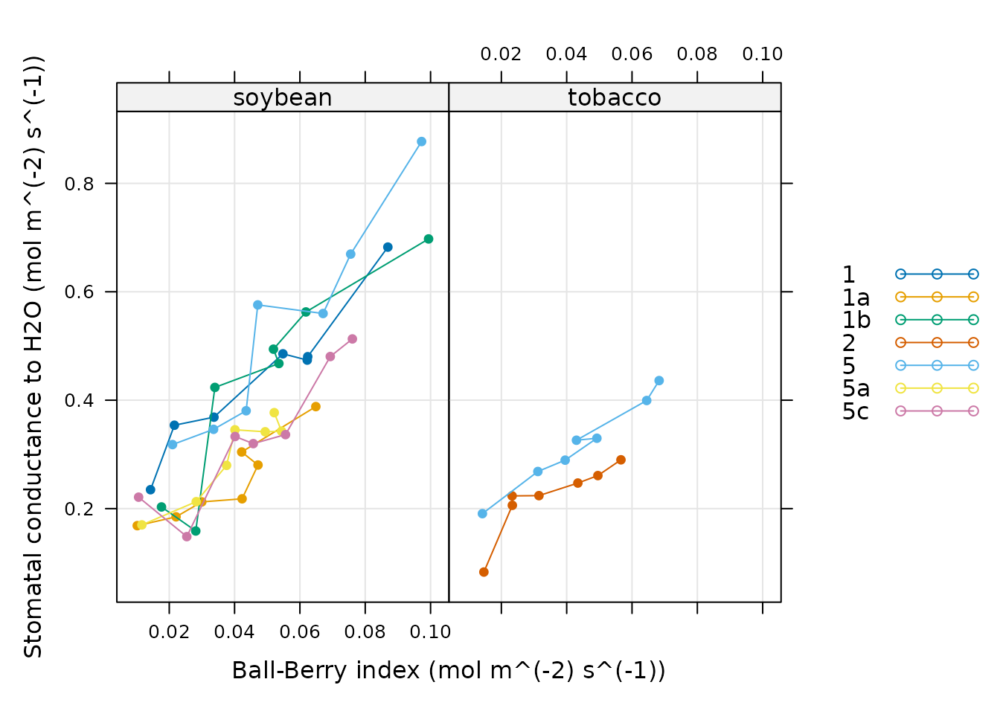

Working With Extended Data Frames
Source:vignettes/working_with_extended_data_frames.Rmd
working_with_extended_data_frames.RmdOverview
The extended data frame (abbreviated as exdf)
class is a special data structure defined by the PhotoGEA
package. In many ways, an exdf object is equivalent to a
data frame, with the major difference being that an exdf
object includes the units and “category” of each column. The
exdf class was originally created as a way to represent the
contents of a Licor Excel file in an R structure. In Licor Excel files,
the data is arranged in a table where each column has a name, units, and
a category; for example, the column for values of net assimilation rate
is called A, has units of micromol / m^2 / s,
and is categorized as a GasEx variable.

Illustration comparing data frames (left) to extended data frames (right).
Because exdf objects keep track of the units for each
column, functions acting on exdf objects are able to check
that important variables have the correct units, ensuring that the
output they produce is correct. Additionally, the category for each
column can be used to store other important information about it, such
as the function that was used to calculate its values. For example, the
calculate_ball_berry_index function takes an
exdf object as an input and (1) checks whether the net
assimilation, relative humidity, and CO2 concentration
columns of the object have the expected units, (2) adds a new column
containing values of the Ball-Berry index, and (3) uses the category of
the new column to indicate it was calculated by
calculate_ball_berry_index.
Thus, exdf objects provide a clear method for ensuring
that requirements about units are met before making calculations and for
retaining a record of how the values of new columns were calculated.
Because of these important properties, nearly all functions in the
PhotoGEA package create or modify exdf objects
rather than regular data frames. In the following sections, this
vignette will demonstrate how to create exdf objects,
extract information from them, and modify their contents.
Note: here, we will assume that you have some basic familiarity with common R data structures like lists, vectors, and data frames. If you are unfamiliar with these, it may be helpful to consult with another online guide or tutorial such as the Data Structures chapter from Advanced R.
Loading Packages
As always, the first step is to load the packages we will be using.
In addition to PhotoGEA, we will also use the
lattice package for generating plots.
If the lattice package is not installed on your R setup,
you can install it by typing
install.packages('lattice').
Basic Properties of an Extended Data Frame
From a technical point of view, an exdf object is simply
an R list with the following properties:
- It must contain elements named
main_data,units, andcategories. - Each of these required elements must be a data frame.
- Each of these required elements must have the same column names,
which can be thought of as the column names for the
exdfobject as a whole. - The
unitsdata frame must contain just one row, whose values specify the units for each column. - The
categorieselement must have one row containing the category of each column. - The
main_datadata frame can have any number of rows and contains the main data of theexdfobject.
The function is.exdf can be used to check whether any R
object is an extended data frame. By default, it performs a simple check
on the information returned by the class function, but it
also has an option to perform a more detailed check of each requirement
listed above. For more information, type ?is.exdf in the R
terminal to access the help menu entry for is.exdf.
Besides these three required elements, it is also possible for an
exdf object to have additional entries such as a
filename that stores the name of the file that was used to
create the exdf. There are no restrictions on the types of
these “extra” elements; they could be numeric values, strings, vectors,
data frames, other lists, etc. Of course, they should not be named
main_data, units, or
categories.
Creating Extended Data Frames
There are three main ways to create an exdf object:
- From three separate data frames specifying the main data, units, and
categories of the new
exdfobject. - From a single data frame representing the main data of the new
exdfobject; in this case, units and categories will be initialized toNA. - From a data file such as a Licor Excel file or a tunable diode laser (TDL) output file.
In the following sections, we will demonstrate each of these methods.
Specifying Main Data, Units, and Categories
As an example of the first method, we will create an extended data
frame called exdf_1 with two columns named A
and B. These two columns will have units of m
and s and categories of Cat1 and
Cat2, respectively.
exdf_1 <- exdf(
data.frame(A = c(3, 2, 7, 9), B = c(4, 5, 1, 8)),
data.frame(A = 'm', B = 's'),
data.frame(A = 'Cat1', B = 'Cat2')
)We can view a nicely-formatted version of the object using the
print command:
print(exdf_1)
#> A [Cat1] (m) B [Cat2] (s)
#> 1 3 4
#> 2 2 5
#> 3 7 1
#> 4 9 8Notice that each column descriptor in the printed version is
formatted as name [category] (units).
Initializing with Default Units and Categories
As an example of the second method, we will create an extended data
frame called exdf_2 with two columns named A
and B, but we won’t specify their units or categories.
exdf_2 <- exdf(data.frame(A = c(3, 2, 7, 9), B = c(4, 5, 1, 8)))As before, we can print the data frame:
print(exdf_2)
#> A [NA] (NA) B [NA] (NA)
#> 1 3 4
#> 2 2 5
#> 3 7 1
#> 4 9 8The units and categories have been initialized to default values of
NA, but we can supply new units and categories using the
document_variables function:
exdf_2 <- document_variables(exdf_2, c('Cat1', 'A', 'm'), c('Cat2', 'B', 's'))Now exdf_2 is identical to exdf_1:
identical(exdf_1, exdf_2)
#> [1] TRUESometimes this method is more convenient than the previous one.
Reading From an Instrument Log File
As an example of the third method, we will create an extended data frame from a Microsoft Excel file containing Licor measurements.
exdf_3 <- read_gasex_file(
PhotoGEA_example_file_path('ball_berry_1.xlsx')
)This new object has many columns and rows, so we won’t print it here.
However, we can confirm that it is indeed a properly-defined
exdf object:
is.exdf(exdf_3, TRUE)
#> [1] TRUEWriting to and Reading From CSV Files
Any exdf object can be saved to a CSV file using the
write.csv.exdf function. For example, the Licor log file
discussed above can be saved to a CSV file as follows:
write.csv.exdf(exdf_3, file = 'ball_berry_1.csv')CSV files created using write.csv.exdf can be read later
using read.csv.exdf, which will create an exdf
object from the information in the file. For example, the CSV file
created with the last command can be read as follows:
exdf_4 <- read.csv.exdf('ball_berry_1.csv')Writing an exdf to a CSV file and then reading it again
preserves all of its information, including categories, units, and
column names. Because of this, the exdf_4 should be
identical to exdf_3.
Extracting Information from Extended Data Frames
There are three main ways to extract information from an extended data frame:
- The “top-level” elements such as
main_dataandunitscan be directly accessed. - Columns or other subsets of the
main_dataelement can be accessed. - An extended data frame with a subset of the original data can be obtained.
In the following sections, we will demonstrate each of these
possibilities. They are also described in a help page that can be
accessed from within R by typing ?extract.exdf.
Accessing Top-Level Elements
Because an extended data frame is technically just a list, its
“top-level” elements can be viewed using names,
$, and [[. For example, all of the top-level
elements can be retrieved using names:
names(exdf_1)
#> [1] "main_data" "units" "categories"
names(exdf_3)
#> [1] "main_data" "units" "categories"
#> [4] "preamble" "data_row" "file_name"
#> [7] "file_type" "instrument_type" "timestamp_colname"Here we see that both exdf objects have the three
required elements: main_data, units, and
categories. exdf_3 has a few “extra” elements
that were automatically created by the read_gasex_file
function. Any of these top-level elements be accessed by name using the
$ and [[ operators:
exdf_1$units
#> A B
#> 1 m s
exdf_3[['file_name']]
#> [1] "/home/runner/work/_temp/Library/PhotoGEA/extdata/ball_berry_1.xlsx"Accessing The Main Data Frame
When colnames or the [ operator are applied
to an exdf object, they act directly on the object’s
main_data element. For example, the following commands are
equivalent ways to access the column names of exdf_1:
Likewise, the following commands are equivalent ways to extract the
A column from exdf_1 as a vector:
exdf_1[, 'A']
#> [1] 3 2 7 9
exdf_1$main_data[, 'A']
#> [1] 3 2 7 9
exdf_1$main_data$A
#> [1] 3 2 7 9It is usually preferable to apply these functions to the
exdf object rather than its main_data element
since the resulting code is cleaner.
Creating a Subset
Sometimes it is necessary to extract a subset of an exdf
object. For example, we may wish to extract just the rows from
exdf_1 where the value of the A column is
greater than 5, keeping all the columns. This can be accomplished as
follows, using a syntax that is nearly identical to the syntax of
extracting a subset of a data frame:
exdf_1[exdf_1[, 'A'] > 5, , return_exdf = TRUE]
#> A [Cat1] (m) B [Cat2] (s)
#> 3 7 1
#> 4 9 8Here it is critical to specify return_exdf = TRUE;
otherwise, the command will instead return a subset of the
exdf object’s main_data element, as discussed
in Accessing The Main Data
Frame:
is.exdf(exdf_1[exdf_1[, 'A'] > 5, , TRUE])
#> [1] TRUE
is.data.frame(exdf_1[exdf_1[, 'A'] > 5, ])
#> [1] TRUEModifying Extended Data Frames
As is the case with extracting information, it is possible to modify
the “top-level” elements of an exdf object as well as the
contents of its main_data. The following sections provide
examples of both types of operations.
Modifying Top-Level Elements
Top-level elements can be added or modified using
[[<- and $<- as with any list. As an
example, we will change the file_name element of
exdf_3 and add a new top-level element:
exdf_3$file_name <- 'new_file_name.xlsx'
exdf_3[['new_element']] <- 5We can confirm the changes:
exdf_3$file_name
#> [1] "new_file_name.xlsx"
exdf_3$new_element
#> [1] 5Modifying the Main Data
The contents of the main_data of an exdf
object can be modified using the [<- operator. For
example, we could add 1 to each value in the A column of
exdf_2:
exdf_2[, 'A'] <- exdf_2[, 'A'] + 1We could also add a new column called C:
exdf_2[, 'C'] <- 7In this case, the units and category of the new column will be
initialized to NA:
print(exdf_2)
#> A [Cat1] (m) B [Cat2] (s) C [NA] (NA)
#> 1 4 4 7
#> 2 3 5 7
#> 3 8 1 7
#> 4 10 8 7The units and category of the new column can be modified later with
document_variables as in Initializing with
Default Units and Categories.
Alternatively, the set_variable function can be used to
set the value, units, and category of a column in an extended data frame
in one step. Here we use this function to add a new column called
D with units of kg and category
cat4 whose value is 20:
exdf_2 <- set_variable(exdf_2, 'D', 'kg', 'cat4', 20)
print(exdf_2)
#> A [Cat1] (m) B [Cat2] (s) C [NA] (NA) D [cat4] (kg)
#> 1 4 4 7 20
#> 2 3 5 7 20
#> 3 8 1 7 20
#> 4 10 8 7 20The set_variable function also has more advanced
abilities to set separate values of a column for different subsets of an
extended data frame; for more information, see its help menu entry by
typing ?set_variable.
Important note: It is generally a bad idea to
directly modify main_data because this can cause problems.
For example, we could try adding another new column called
E using the following code:
exdf_2$main_data$E <- 17Now, exdf_2 is no longer a properly defined
exdf object because there is a E column in
exdf_2$main_data that is not present in
exdf_2$units or exdf_2$categories. This may
prevent other functions from working properly; for example,
print will not properly display the E column.
This is a subtle problem that can only be detected using
is.exdf with consistency_check set to
TRUE:
print(exdf_2)
#> A [Cat1] (m) B [Cat2] (s) C [NA] (NA) D [cat4] (kg) NA
#> 1 4 4 7 20 17
#> 2 3 5 7 20 17
#> 3 8 1 7 20 17
#> 4 10 8 7 20 17
is.exdf(exdf_2)
#> [1] TRUE
is.exdf(exdf_2, TRUE)
#> Warning in is.exdf(exdf_2, TRUE): `x$main_data`, `x$units`, and `x$categories`
#> must have the same column names
#> [1] FALSECommon Patterns
Here will we explain a few common ways that exdf objects
are created, modified, or otherwise used.
Combining Data From Several Files
It is quite common for one data set to be spread across multiple data
files; for example, if multiple Licors are used to measure response
curves from a set of plants, there will be one data file for each
machine. On the other hand, the data is much easier to process and
analyze if it is stored in a single exdf object. Thus, it
is common to take the following steps in a script:
- Define a vector of file names that identify the files to be loaded.
- Use
lapplyandread_gasex_fileto load each file, producing alistofexdfobjects. - Identify common columns using
identify_common_columns; in other words, determine which columns are present in each of theexdfobjects. - Limit each
exdfobject to just the common columns using the[operator withreturn_exdfset toTRUE. - Use
rbindto combine theexdfobjects into a singleexdfcontaining the data from all of the files.
In this process, steps 3 and 4 are required because exdf
objects cannot be combined with rbind if they have
different columns. This way of combining can be visualized as stacking
tables on top of each other vertically, and it only makes sense if they
all have the same columns. It is common for Licor files to have some
differences between their columns, so these steps are usually necessary.
Even if all the files do have the same columns, taking these
steps will not cause any issues, so there’s no harm in always doing
this. The following image illustrates this process visually for a set of
three files.

Illustration of combining multiple tables using
identify_common_columns and rbind. In this
example, the YY and ZZ columns are not present
in all of the tables, so they are removed before the tables are
vertically stacked.
The following is an example of code that accomplishes these steps:
# Define a vector of paths to the files we wish to load
file_paths <- c(
PhotoGEA_example_file_path('ball_berry_1.xlsx'),
PhotoGEA_example_file_path('ball_berry_2.xlsx')
)
# Load each file, storing the result in a list
licor_exdf_list <- lapply(file_paths, function(fpath) {read_gasex_file(fpath)})
# Get the names of all columns that are present in all of the Licor files
columns_to_keep <- do.call(identify_common_columns, licor_exdf_list)
# Extract just these columns
licor_exdf_list <- lapply(licor_exdf_list, function(x) {
x[ , columns_to_keep, TRUE]
})
# Use `rbind` to combine all the data
licor_data <- do.call(rbind, licor_exdf_list)This pattern (where files are loaded, truncated to common columns, and then combined) is found in most analysis scripts, such as the one in the Analyzing Ball-Berry Data vignette.
Now that the data from the files has been combined into one
exdf object, it’s easy to perform calculations on all of it
at once. For example, we can calculate total pressure, additional gas
properties, and the Ball-Berry index:
# Calculate the total pressure in the Licor chamber
licor_data <- calculate_total_pressure(licor_data)
# Calculate additional gas properties, including `RHleaf` and `Csurface`
licor_data <- calculate_gas_properties(licor_data)
# Calculate the Ball-Berry index
licor_data <- calculate_ball_berry_index(licor_data)In this example, the vector of files to load was defined manually by
typing out the file names; files can also be selected interactively
using the choose_input_files,
choose_input_licor_files, and
choose_input_tdl_files functions.
Processing Multiple Pieces of an Extended Data Frame
It is common for an exdf object to contain data that
represents multiple “chunks,” such as response curves, that can each be
located using the value of one or more “identifier” columns like
event, replicate, species, etc.
In this scenario, it is often desirable to apply a function, such as a
fitting function, to each chunk in the data set. As a concrete example,
the licor_data exdf created in Combining Data From Several
Files contains several Ball-Berry curves, and the
fit_ball_berry function applies a fitting procedure to one
curve to determine values for the Ball-Berry parameters. How can we
apply fit_ball_berry to each curve in the data in a simple
way?
Often the easiest route is to use the by function. This
function requires four inputs:
- An
exdfobject containing multiple “chunks” of data. - One or more vectors whose values can be used to split the
exdfinto chunks. - A function that should be appled to each chunk.
- Any additional arguments that should be passed to the function.
With this information, by will split the
exdf object into chunks and apply the function to each one.
Its return value will be a list, where each list element is the output
from one function call, as applied to one chunk. For more information,
access the built-in help system entry by typing ?by.exdf.
Here we show how by can be used to apply the Ball-Berry
fitting procedure to each curve in licor_data:
by_result <- by(
licor_data, # exdf object
list(licor_data[, 'species'], licor_data[, 'plot']), # identifier columns
fit_ball_berry # function to apply to chunks
)The fit_ball_berry function returns a list of two
exdf objects named fits and
parameters, so the return value from by is a
complicated object: it is a list of lists of exdf objects; in other
words, a nested list. We can see this structure as follows:
str(by_result, max.level = 2)
#> List of 8
#> $ soybean.1 :List of 2
#> ..$ parameters:'data.frame': 1 obs. of 80 variables:
#> ..$ fits :'data.frame': 7 obs. of 254 variables:
#> $ soybean.1a:List of 2
#> ..$ parameters:'data.frame': 1 obs. of 79 variables:
#> ..$ fits :'data.frame': 7 obs. of 254 variables:
#> $ soybean.1b:List of 2
#> ..$ parameters:'data.frame': 1 obs. of 77 variables:
#> ..$ fits :'data.frame': 7 obs. of 254 variables:
#> $ tobacco.2 :List of 2
#> ..$ parameters:'data.frame': 1 obs. of 77 variables:
#> ..$ fits :'data.frame': 7 obs. of 254 variables:
#> $ soybean.5 :List of 2
#> ..$ parameters:'data.frame': 1 obs. of 77 variables:
#> ..$ fits :'data.frame': 7 obs. of 254 variables:
#> $ tobacco.5 :List of 2
#> ..$ parameters:'data.frame': 1 obs. of 79 variables:
#> ..$ fits :'data.frame': 7 obs. of 254 variables:
#> $ soybean.5a:List of 2
#> ..$ parameters:'data.frame': 1 obs. of 81 variables:
#> ..$ fits :'data.frame': 7 obs. of 254 variables:
#> $ soybean.5c:List of 2
#> ..$ parameters:'data.frame': 1 obs. of 81 variables:
#> ..$ fits :'data.frame': 7 obs. of 254 variables:It would be much easier to work with this information if it were
reorganized by separately combining all of the fits and
parameters elements. Fortunately, this can be easily done
with the consolidate function. This function will collect
all of the second-level elements with the same names and combine them
using rbind:
consolidate_by_result <- consolidate(by_result)We can now see that instead of a nested list, we have a list of two
exdf objects:
str(consolidate_by_result, max.level = 1)
#> List of 2
#> $ parameters:'data.frame': 8 obs. of 76 variables:
#> $ fits :'data.frame': 56 obs. of 254 variables:It is common to apply the consolidate and
by functions in the same line to make the code more
concise. Afterwards, the elements from the resulting list can be
separated to make additional analysis easier:
ball_berry_result <- consolidate(by(
licor_data,
list(licor_data[, 'species'], licor_data[, 'plot']),
fit_ball_berry,
'gsw', 'bb_index'
))
ball_berry_fits <- ball_berry_result$fits
ball_berry_parameters <- ball_berry_result$parametersThis pattern (where a function is applied to multiple curves using
consolidate and by) is found in most analysis
scripts, such as the one in the Analyzing Ball-Berry Data
vignette. The following image illustrates this process visually.

Illustration of processing multiple parts of a table using
by and consolidate. Here the id
column is either 1 or 2, and the processing
function returns a list of two tables called fits and
parameters.
Plotting Data From an Extended Data Frame
If an exdf object contains multiple curves, it is often
convenient to plot them using the xyplot function from the
lattice package. This plotting tool makes it easy to put
each curve in its own panel, or to group the curves by an identifier
such as event or species. In this case, it is
common to pass the main_data element of an
exdf object as the data argument of
lattice::xyplot since it only works with data frames:
xyplot(
gsw ~ bb_index | species,
group = plot,
data = licor_data$main_data,
type = 'b',
pch = 16,
auto.key = list(space = 'right'),
grid = TRUE
)
Because exdf objects include the units for each column,
it is also possible to add them to the axis labels. This can be
accomplished using the paste0 function, which can create
character strings from the values of variables. For example, we could
create a string describing the gsw column as follows:
paste0('Stomatal conductance to H2O (', licor_data$units$gsw, ')')
#> [1] "Stomatal conductance to H2O (mol m^(-2) s^(-1))"These labels can then be included in the plot itself:
xyplot(
gsw ~ bb_index | species,
group = plot,
data = licor_data$main_data,
type = 'b',
pch = 16,
auto.key = list(space = 'right'),
grid = TRUE,
xlab = paste0('Ball-Berry index (', licor_data$units$bb_index, ')'),
ylab = paste0('Stomatal conductance to H2O (', licor_data$units$gsw, ')')
)This pattern (where the main_data element of an
exdf object is passed to lattice::xyplot and
its units element is used to create informative axis
labels) is found in most analysis scripts, such as the one in the Analyzing Ball-Berry Data
vignette.
How To Find More Information
All S3 methods defined for the exdf class can be viewed
using the methods function:
methods(class = 'exdf')
#> [1] [ [<- as.data.frame
#> [4] by cbind check_required_variables
#> [7] consolidate dim dimnames
#> [10] dimnames<- exclude_outliers factorize_id_column
#> [13] identifier_columns identify_common_columns length
#> [16] print rbind split
#> [19] str
#> see '?methods' for accessing help and source codeHowever, this does not include all functions related to the
exdf class. Others can be identified by typing
??exdf within the R environment.
Finally, the other vignettes in the PhotoGEA package
include many examples of how exdf objects can be created
and used while analyzing photosynthetic gas exchange data.